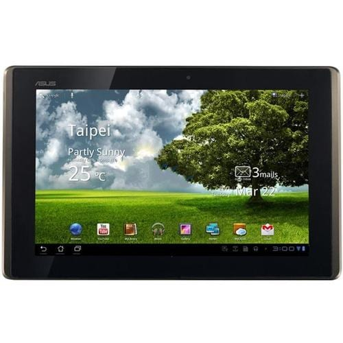

华硕变形平板 TF101

可插拔键盘底座的开山之作，把安卓平板变成小笔记本。
客观评测
TF101 是最早搭载 NVIDIA Tegra 2 双核处理器的安卓平板之一，10.1 英寸 1280×800 IPS 屏配 1GB 内存。最大亮点是可分离式键盘底座：插上即增加约 6 小时续航，并提供全尺寸 USB、SD 卡槽与备用电池，合体后形似一台小笔记本。代价是底座让总重接近 1.3 公斤，且初版 Android 3.0 应用适配粗糙、滑动偶有卡顿。
主观点评
平板加底座的变形概念在 2011 年极具想象力，插拔时的机械咔哒声让人上瘾，也让安卓二合一第一次真正落地。华硕此后把这条产品线延续了近十年，二合一的行业范式由此确立。可惜早期 Honeycomb 生态支离破碎，键盘手感也只算及格，概念的光芒终究盖过了体验本身。
优点与不足
- 键盘底座带来额外续航与接口
- 变形概念在当时极具想象力
- IPS 屏幕素质在安卓阵营领先
- 初版 Android 3.0 应用适配粗糙
- 含底座后重量接近轻薄本
- 底座需单独购买，价格不低
参数规格
| 屏幕 | 10.1 英寸 IPS 触摸屏 |
|---|---|
| 分辨率 | 1280×800 |
| 处理器 | NVIDIA Tegra 2 双核 1GHz |
| 内存 | 1GB |
| 存储 | 16GB / 32GB，支持 microSD |
| 系统 | Android 3.0 Honeycomb（后升级 4.0） |
| 摄像头 | 后置 500 万、前置 130 万像素 |
| 重量 | 平板约 680 克，含底座约 1.3 公斤 |
| 厚度 | 平板约 12.98 毫米 |
| 特色 | 键盘底座内置电池，可扩展 USB 与 SD 卡槽 |